## synchronization | **critical sections** ## **operating systems** ### csci 3411 ### Prof. **Sibin Mohan** <br> _<font size="5"> acknowledgments: some content modified from Silberschatz et al. and West</font>_ --- previously, in operating systems... --- - **threads** → share **everything** in a process --- - **threads** → share **everything** in a process - sharing is **easy**... --- - **threads** → share **everything** in a process - sharing is **easy**... - ...**safely** sharing is **not**! --- synchronization → one of the **hardest** topics in this course! --- ## synchronization **motivation** --- ### multithreaded applications --- ### multithreaded applications - threads **share** - same **virtual address space** - same **data structures** --- ### multithreaded applications <scb>two</scb> threads, walking <scb>one</scb> shared data structure <p>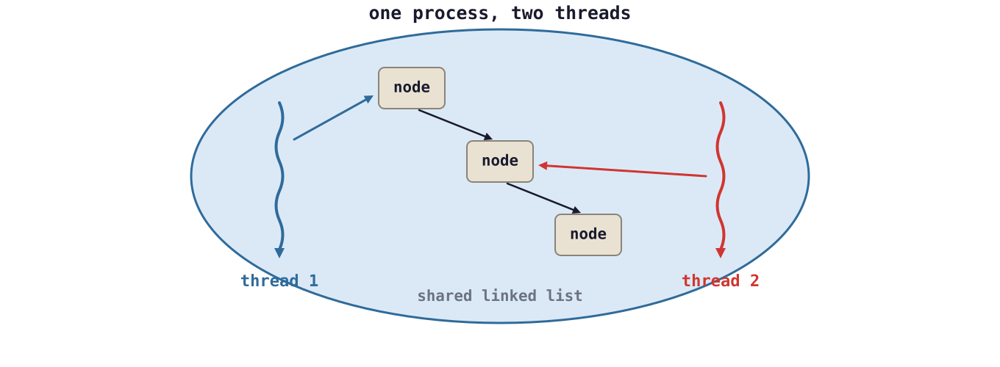</p> --- ### **concurrently** executing threads - **unknown** execution order _w.r.t._ each other --- ### **concurrently** executing threads - **unknown** execution order _w.r.t._ each other - access data structures in **unpredictable** order --- how does a system make this **work**!? --- ### example | **linked list** --- let's look at a `code` example... a linked list (pseudo-code) --- ### example | **linked list** ```python struct node { struct node *next; char *name; }; struct node *list = NULL; list_push(list, new): tmp = list->first new->next = tmp list->first = new list_pop(list): tmp = list->first if (tmp): list->first = tmp->next tmp->next = NULL return tmp list_find(list, name): for (n = list->first ; n ; n = n->next): if (n->name == name) return n return NULL ``` --- ### example | **linked list** ```python [1-4|5|7|8|9|10|12-17|19-22] struct node { struct node *next; char *name; }; struct node *list = NULL; list_push(list, new): tmp = list->first new->next = tmp list->first = new list_pop(list): tmp = list->first if (tmp): list->first = tmp->next tmp->next = NULL return tmp list_find(list, name): for (n = list->first ; n ; n = n->next): if (n->name == name) return n return NULL ``` --- ### example | **linked list** ```python struct node { struct node *next; char *name; }; struct node *list = NULL; list_push(list, new): tmp = list->first new->next = tmp list->first = new list_pop(list): tmp = list->first if (tmp): list->first = tmp->next tmp->next = NULL return tmp list_find(list, name): for (n = list->first ; n ; n = n->next): if (n->name == name) return n return NULL ``` --- ### linked list | **what could go wrong?** **two** threads...both using list operations --- ### linked list | **what could go wrong?** **two** threads...both using list operations | thread 1 | thread 2 | |---|---| | adding | adding | --- ### linked list | **what could go wrong?** **two** threads...both using list operations | thread 1 | thread 2 | |---|---| | adding | adding | | adding | removing | --- ### linked list | **what could go wrong?** **two** threads...both using list operations | thread 1 | thread 2 | |---|---| | adding | adding | | adding | removing | | adding | finding | --- ### linked list | **what could go wrong?** **two** threads...both using list operations | thread 1 | thread 2 | |---|---| | adding | adding | | adding | removing | | adding | finding | | removing | removing | || --- ## race conditions --- ### race conditions - **non-deterministic** accesses to a data structure --- ### race conditions - **non-deterministic** accesses to a data structure - leave it in an **inconsistent** state --- ### race conditions - **non-deterministic** accesses to a data structure - leave it in an **inconsistent** state - a state that **<font color="darkred">no sequential execution</font>** could yield! --- let's watch one happen... two threads <scb>list_push()</scb> at the **same time** --- ### race condition | <scb>list_push</scb> ||| | --- | --- | | <scb>T1</scb> [**<font color="blue">blue</font>**] | <scb>list_push(list, b)</scb> | | <scb>T2</scb> [**<font color="red">red</font>**] | <scb>list_push(list, c)</scb> | || --- ### race condition | <scb>list_push</scb> ||| | --- | --- | | <scb>T1</scb> [**<font color="blue">blue</font>**] | <scb>list_push(list, b)</scb> | | <scb>T2</scb> [**<font color="red">red</font>**] | <scb>list_push(list, c)</scb> | || --- ### race condition | <scb>list_push</scb> 1. <scb>T1</scb>: <scb>tmp = list->first</scb> → <scb>tmp = a</scb> <p>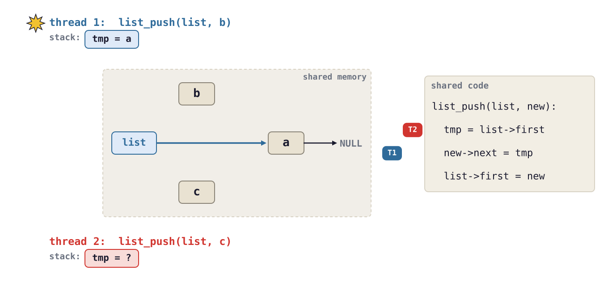</p> --- ### race condition | <scb>list_push</scb> 2. **preemption**! context switch to <scb>T2</scb> <p>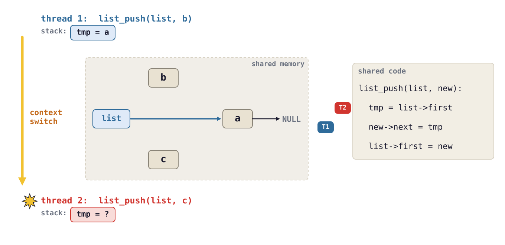</p> --- ### race condition | <scb>list_push</scb> 3. <scb>T2</scb>: <scb>tmp = list->first</scb> → also <scb>a</scb> <p>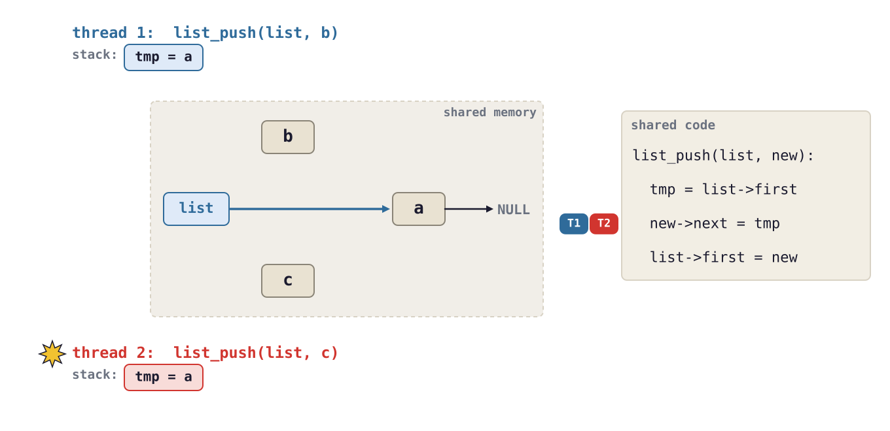</p> --- ### race condition | <scb>list_push</scb> 4. <scb>T2</scb>: <scb>c->next = a</scb> <p>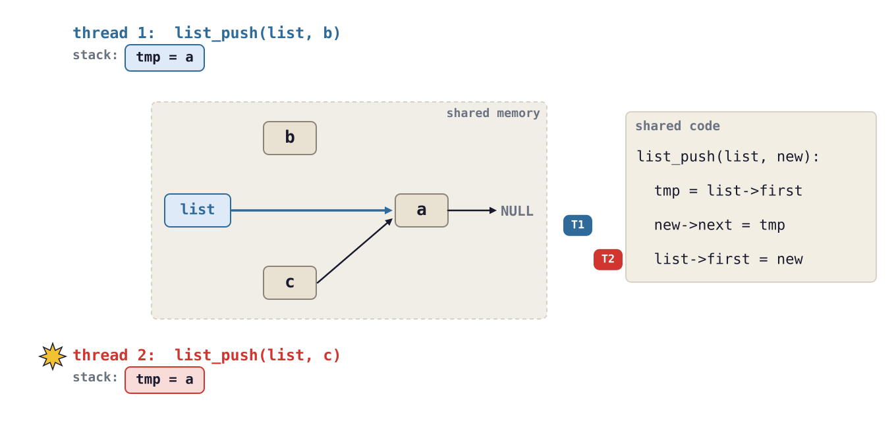</p> --- ### race condition | <scb>list_push</scb> 5. <scb>T2</scb>: <scb>list->first = c</scb> → list is <scb>c, a</scb> --- ### race condition | <scb>list_push</scb> 6. <scb>T2</scb> returns → all good... so far <p>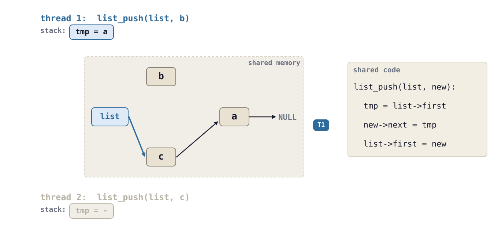</p> --- ok, <scb>T2</scb> pushed <scb>c</scb> successfully... --- ok, <scb>T2</scb> pushed <scb>c</scb> successfully... ...but <scb>T1</scb> was **preempted** in the middle of its push! --- ### race condition | <scb>list_push</scb> 7. switch back to <scb>T1</scb> → <scb>tmp</scb> **still** <scb>a</scb>! <p>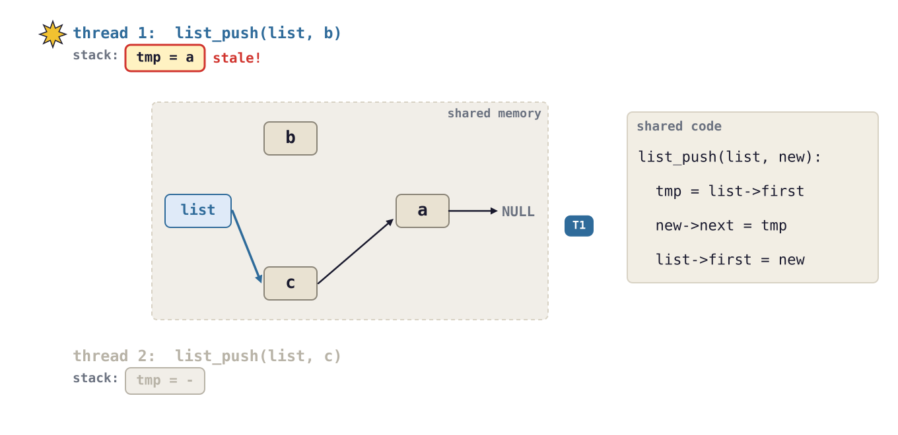</p> --- ### race condition | <scb>list_push</scb> 8. <scb>T1</scb>: <scb>b->next = a</scb> <p>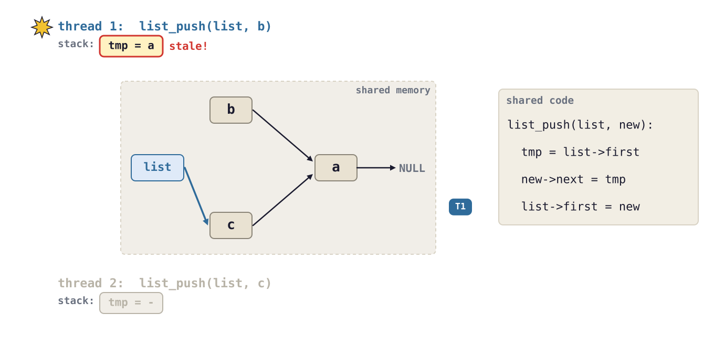</p> --- ### race condition | <scb>list_push</scb> 9. <scb>T1</scb>: <scb>list->first = b</scb> <p>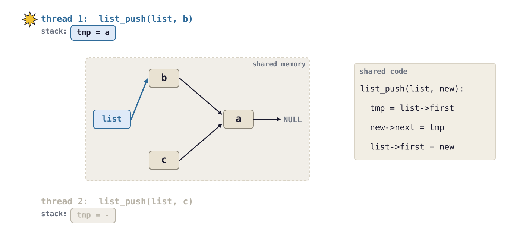</p> --- ### race condition | <scb>list_push</scb> 10. node <scb>c</scb> is **gone** from list! <img src="./img/critical_sections/race_list_11.png" height="705"> --- ### race condition | <scb>list_push</scb> each thread → **own** registers and stack <div class="multicolumn" style="display: grid; grid-template-columns: 40% 60%; gap: 20px; align-items: center;"> <div> </div> <div> - <scb>tmp</scb> lives on <scb>T1</scb>'s **stack** - <scb>T2</scb>'s changes → **invisible** to <scb>T1</scb> - <scb>tmp</scb> is **stale**! </div> </div> --- ### **yikes!** - node got **dropped** → memory leak --- ### **yikes!** - node got **dropped** → memory leak - ...and insert **silently** failed --- **worse than that**...this happens... - **non-deterministically** --- **worse than that**...this happens... - **non-deterministically** - **rarely** --- **worse than that**...this happens... - **non-deterministically** - **rarely** - ...in a manner **difficult to debug** --- isn't **rare** good? --- isn't **rare** good? ### **rare is worse!** --- ### **rare is worse!** - nearly impossible to **reproduce** and **debug** --- ### **rare is worse!** - nearly impossible to **reproduce** and **debug** - deploy to **millions** of machines - "rare" happens **every day** --- ### **rare is worse!** - nearly impossible to **reproduce** and **debug** - deploy to **millions** of machines - "rare" happens **every day** - _e.g.,_ early Windows desktops - frequent reboots, many due to races --- need to solve this at **design time**! [not "_implement, watch it fail, debug_"] --- ### producer/consumer example --- let's look at a `code` example... a **ring buffer** --- ### producer/consumer | **ring buffer** ```C // producer while (1) { struct item i = produce_item(); while (count == BUFFER_SIZE) ; buffer[in] = i; in = (in + 1) % BUFFER_SIZE; count++; } // consumer while (1) { struct item i; while (count == 0) ; i = buffer[out]; out = (out + 1) % BUFFER_SIZE; count--; consume_item(i); } ``` --- ### producer/consumer | **ring buffer** ```C [4|5|6|7|13|14|15|16] // producer while (1) { struct item i = produce_item(); while (count == BUFFER_SIZE) ; buffer[in] = i; in = (in + 1) % BUFFER_SIZE; count++; } // consumer while (1) { struct item i; while (count == 0) ; i = buffer[out]; out = (out + 1) % BUFFER_SIZE; count--; consume_item(i); } ``` --- ### producer/consumer | **ring buffer** ```C // producer while (1) { struct item i = produce_item(); while (count == BUFFER_SIZE) ; buffer[in] = i; in = (in + 1) % BUFFER_SIZE; count++; } // consumer while (1) { struct item i; while (count == 0) ; i = buffer[out]; out = (out + 1) % BUFFER_SIZE; count--; consume_item(i); } ``` --- where is the **race condition**? --- where is the **race condition**? <p>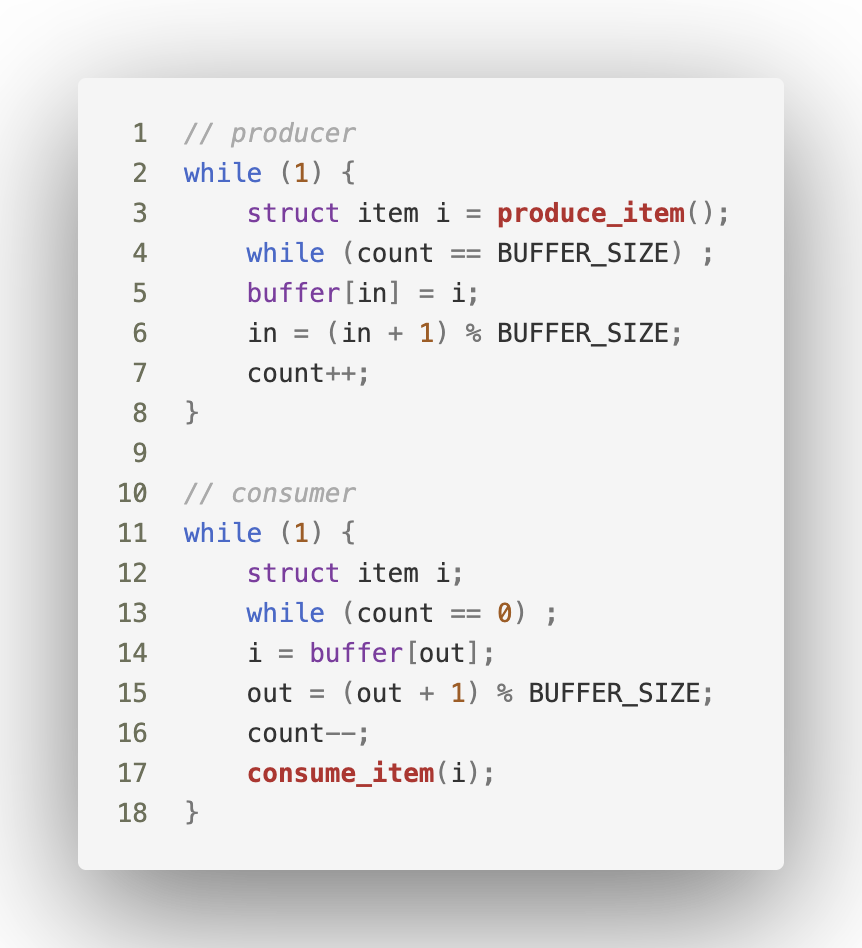</p> --- ### producer/consumer | **what's shared?** <div class="multicolumn" style="display: grid; grid-template-columns: 40% 60%; gap: 20px; align-items: center;"> <div> </div> <div> ||| | --- | --- | | <scb>in</scb> | **only** producer modifies | || </div> </div> --- ### producer/consumer | **what's shared?** <div class="multicolumn" style="display: grid; grid-template-columns: 40% 60%; gap: 20px; align-items: center;"> <div> </div> <div> ||| | --- | --- | | <scb>in</scb> | **only** producer modifies | | <scb>out</scb> | **only** consumer modifies | || </div> </div> --- ### producer/consumer | **what's shared?** <div class="multicolumn" style="display: grid; grid-template-columns: 40% 60%; gap: 20px; align-items: center;"> <div> </div> <div> ||| | --- | --- | | <scb>in</scb> | **only** producer modifies | | <scb>out</scb> | **only** consumer modifies | | <scb>count</scb> | **both** modify → **shared**! | || </div> </div> --- ### producer/consumer | **what's shared?** <div class="multicolumn" style="display: grid; grid-template-columns: 40% 60%; gap: 20px; align-items: center;"> <div> </div> <div> ||| | --- | --- | | <scb>in</scb> | **only** producer modifies | | <scb>out</scb> | **only** consumer modifies | | <scb>count</scb> | **both** modify → **shared**! | || </div> </div> <br> more producers or consumers → **more** races! --- wait...how can a race happen on **single** <scb>int</scb>? --- wait...how can a race happen on **single** <scb>int</scb>? ### <scb>count++</scb> | **not one instruction** --- ### <scb>count++</scb> | **not one instruction** - <scb>count++</scb> is really <br> <p>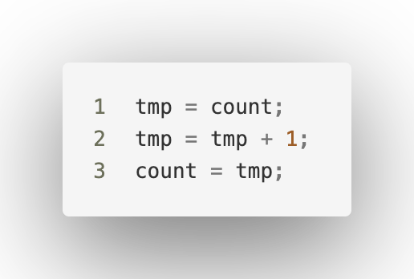</p> --- ### <scb>count++</scb> | **not one instruction** <div class="multicolumn" style="display: grid; grid-template-columns: 50% 50%; gap: 20px; align-items: center;"> <div> - <scb>count++</scb> is really <br> </div> <div> - <scb>count--</scb> is really <br> <p>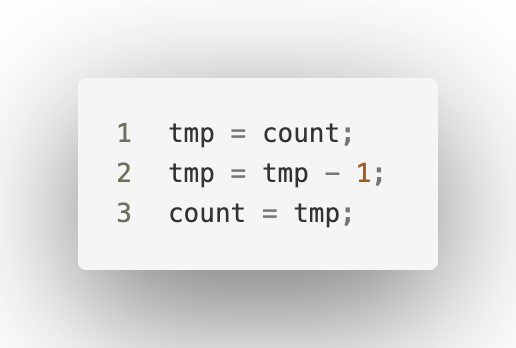</p> </div> </div> --- ### <scb>count++</scb> | **in x86 assembly** <scb>i686-linux-gnu-gcc -O0 -S</scb> (32-bit x86, like xv6) ```x86asm produce: movl count, %eax addl $1, %eax movl %eax, count consume: movl count, %eax subl $1, %eax movl %eax, count ``` --- ### <scb>count++</scb> | **in x86 assembly** <scb>i686-linux-gnu-gcc -O0 -S</scb> (32-bit x86, like xv6) ```x86asm [2|3|4|6-9] produce: movl count, %eax addl $1, %eax movl %eax, count consume: movl count, %eax subl $1, %eax movl %eax, count ``` --- ### <scb>count++</scb> | **in x86 assembly** - **load** → **modify** → **store** --- ### <scb>count++</scb> | **in x86 assembly** - **load** → **modify** → **store** - thread can be **interrupted** between any two --- ### <scb>count++</scb> | **in x86 assembly** - **load** → **modify** → **store** - thread can be **interrupted** between any two - **each** thread → **own** <scb>%eax</scb> --- ### <scb>count++</scb>/<scb>count--</scb> what should <scb>count</scb> be at the end? ```C int count = 1; // shared // thread 1 (blue) // thread 2 (red) count++; count--; ``` remember → <scb>2</scb> threads, running **concurrently** --- ### <scb>count++</scb>/<scb>count--</scb> what should <scb>count</scb> be at the end? --- ### <scb>count++</scb>/<scb>count--</scb> what should <scb>count</scb> be at the end? <br> <br> ## it **depends**! --- ### **three interleavings** ||| | --- | --- | | thread 1 [**<font color="blue">blue</font>**] | <scb>count++</scb>| | thread 2 [**<font color="red">red</font>**] | <scb>count--</scb>| || --- ### **three interleavings** what is <scb>count</scb> in each case? <p>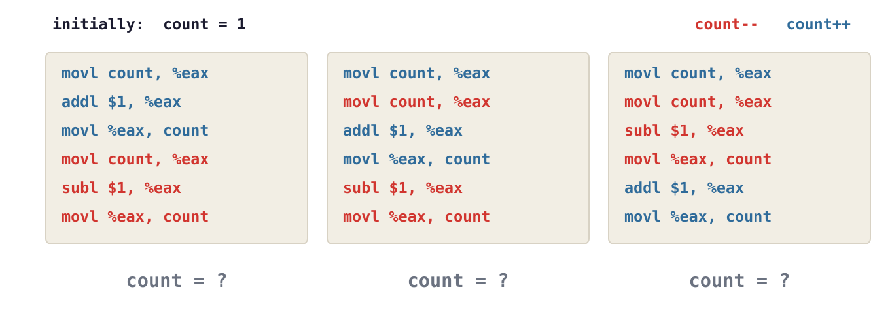</p> --- ### **three interleavings** sequential → <scb>count = 1</scb> → as expected <p>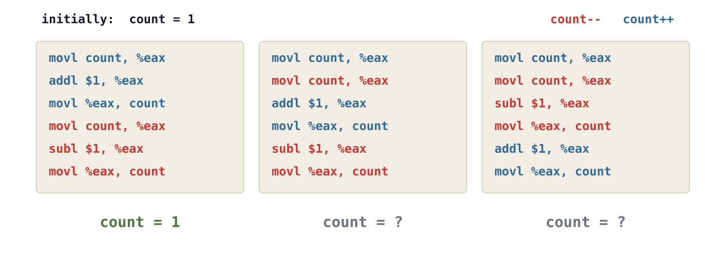</p> --- ### **three interleavings** interleaved → <scb>count = 0</scb>! --- ### **three interleavings** interleaved differently → <scb>count = 2</scb>! <p>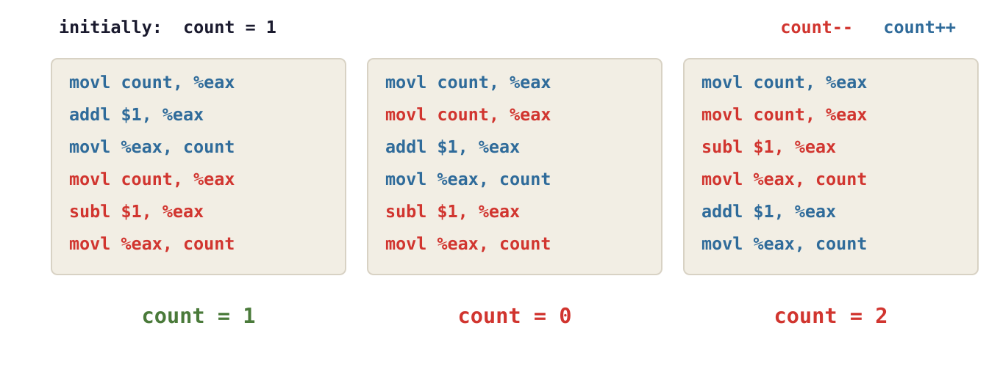</p> --- let's **trace** the middle case, instruction by instruction --- ### <scb>count++</scb>/<scb>count--</scb> | **trace** initially → <scb>count = 1</scb> <p>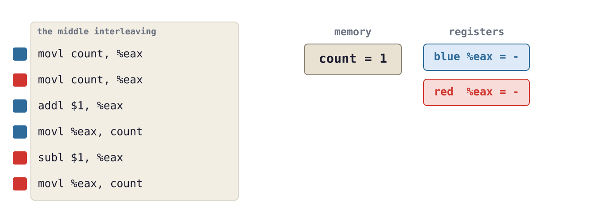</p> --- ### <scb>count++</scb>/<scb>count--</scb> | **trace** 1. **<font color="blue">blue</font>** loads <scb>count</scb> → its <scb>%eax = 1</scb> <p>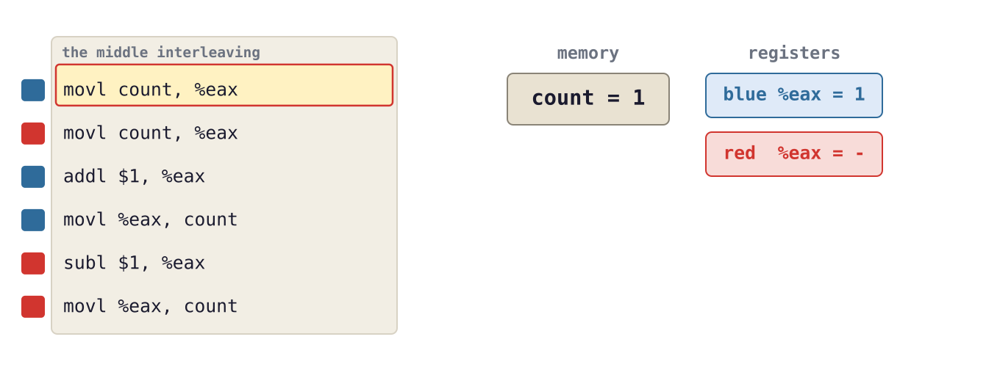</p> --- ### <scb>count++</scb>/<scb>count--</scb> | **trace** 2. **switch**! **<font color="red">red</font>** loads <scb>count</scb> → its <scb>%eax = 1</scb> too <p>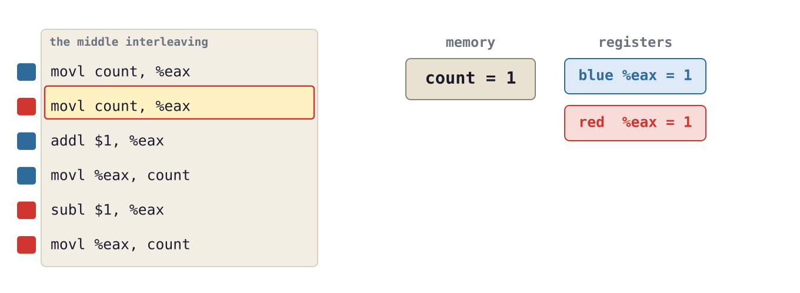</p> --- ### <scb>count++</scb>/<scb>count--</scb> | **trace** 3. **<font color="blue">blue</font>** adds → <scb>%eax = 2</scb> <p>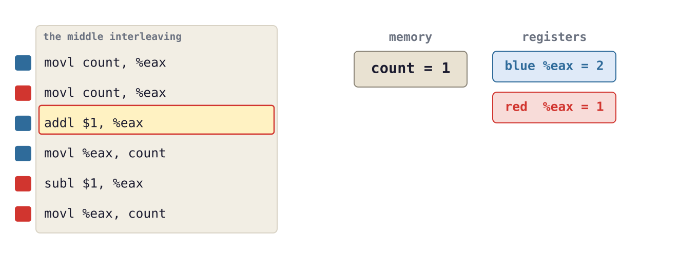</p> --- ### <scb>count++</scb>/<scb>count--</scb> | **trace** 4. **<font color="blue">blue</font>** stores → <scb>count = 2</scb> <p>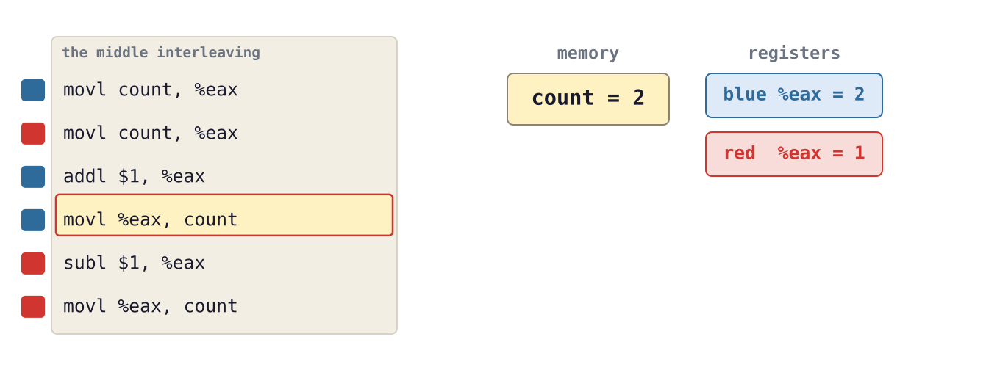</p> --- ### <scb>count++</scb>/<scb>count--</scb> | **trace** 5. **<font color="red">red</font>** subtracts from **stale** value → <scb>%eax = 0</scb> <p>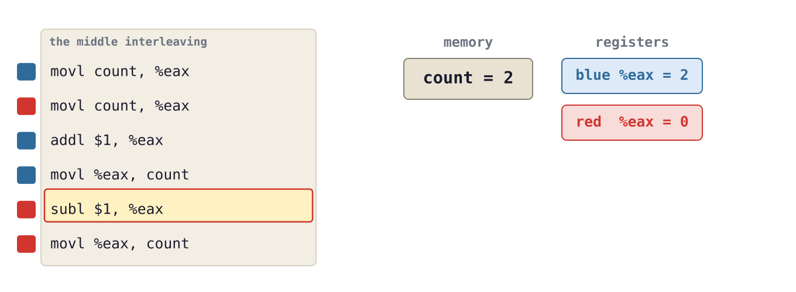</p> --- ### <scb>count++</scb>/<scb>count--</scb> | **trace** 6. **<font color="red">red</font>** stores → <scb>count = 0</scb>! <p>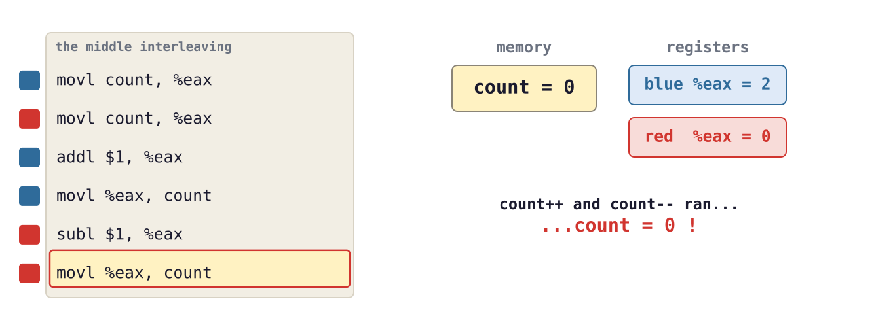</p> --- ## principle of **synchronization** --- ### principle of synchronization - ring buffer → **inconsistent** without accurate <scb>count</scb> --- ### principle of synchronization - ring buffer → **inconsistent** without accurate <scb>count</scb> - **arbitrary interleavings** of threads - accessing **shared data** → inconsistency! --- ### principle of synchronization - otherwise known as **race conditions** --- ### principle of synchronization - otherwise known as **race conditions** - <scb>count</scb> here... could be **pointers** in linked list --- threads accessing shared data must **cooperate**... --- threads accessing shared data must **cooperate**... - access data **one at a time** --- threads accessing shared data must **cooperate**... - access data **one at a time** - using a method that **enforces** this --- threads accessing shared data must **cooperate**... - access data **one at a time** - using a method that **enforces** this <br> <br> <center><div class="center" data-id="box" style="height: 75px; width: 500px; background: orange;"> <b>synchronization!</b> </div></center> --- ## **kernel** synchronization --- ### **kernel** synchronization - xv6 (and early UNIX) → **no** threads in processes --- ### **kernel** synchronization - xv6 (and early UNIX) → **no** threads in processes - ...so kernel doesn't need synchronization? --- ### **kernel** synchronization - xv6 (and early UNIX) → **no** threads in processes - ...so kernel doesn't need synchronization? <br> <br> ## **wrong!** --- **interrupts** made kernel code **concurrent** --- ### **kernel** synchronization ||| | --- | --- | | normal kernel code | <scb>count++</scb> | --- ### **kernel** synchronization ||| | --- | --- | | normal kernel code | <scb>count++</scb> | | interrupt service routine (ISR) | <scb>count--</scb> | || --- ### **kernel** synchronization ISR runs **in the middle** of <scb>count++</scb> --- ### **kernel** synchronization ISR runs **in the middle** of <scb>count++</scb> <p>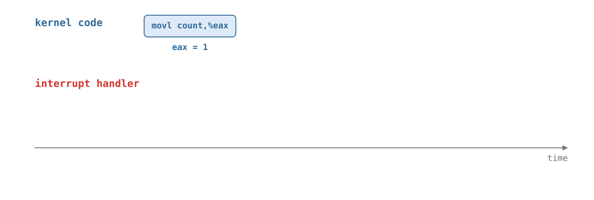</p> --- ### **kernel** synchronization ISR runs **in the middle** of <scb>count++</scb> <p>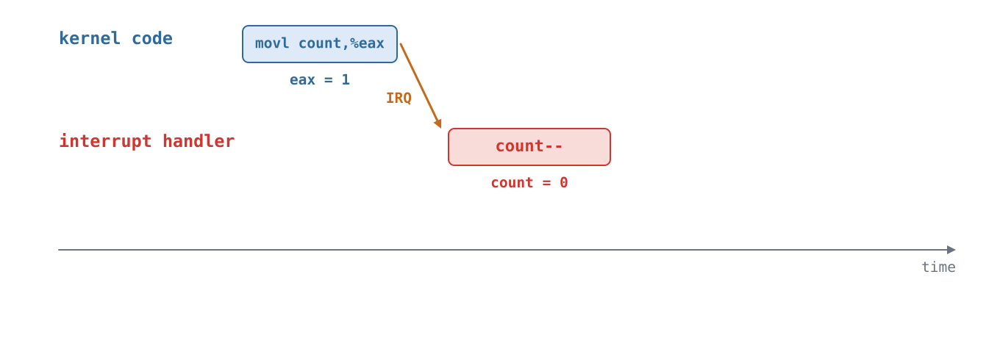</p> --- ### **kernel** synchronization ISR runs **in the middle** of <scb>count++</scb> <p>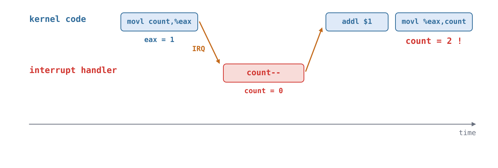</p> --- ouch! thread-like problems due to concurrency... **everywhere**! --- let's look at <scb>xv6</scb>... <scb>trap.c</scb> --- ### <scb>xv6</scb> | **timer interrupt** ```C switch(tf->trapno){ case T_IRQ0 + IRQ_TIMER: if(cpuid() == 0){ acquire(&tickslock); ticks++; wakeup(&ticks); release(&tickslock); } lapiceoi(); break; ``` --- ### <scb>xv6</scb> | **timer interrupt** ```C [2|3|4|5|6|7] switch(tf->trapno){ case T_IRQ0 + IRQ_TIMER: if(cpuid() == 0){ acquire(&tickslock); ticks++; wakeup(&ticks); release(&tickslock); } lapiceoi(); break; ``` --- ### <scb>xv6</scb> | **timer interrupt** ```C switch(tf->trapno){ case T_IRQ0 + IRQ_TIMER: if(cpuid() == 0){ acquire(&tickslock); ticks++; wakeup(&ticks); release(&tickslock); } lapiceoi(); break; ``` --- ### <scb>xv6</scb> | <scb>struct spinlock</scb> <scb>tickslock</scb> → a <scb>struct spinlock</scb> (<scb>spinlock.h</scb>) ```C // Mutual exclusion lock. struct spinlock { uint locked; // Is the lock held? // For debugging: char *name; // Name of lock. struct cpu *cpu; // The cpu holding the lock. uint pcs[10]; // The call stack (an array of program counters) // that locked the lock. }; ``` --- ### <scb>xv6</scb> | <scb>struct spinlock</scb> ```C [3|6-9] // Mutual exclusion lock. struct spinlock { uint locked; // Is the lock held? // For debugging: char *name; // Name of lock. struct cpu *cpu; // The cpu holding the lock. uint pcs[10]; // The call stack (an array of program counters) // that locked the lock. }; ``` --- ### <scb>xv6</scb> | <scb>struct spinlock</scb> ```C // Mutual exclusion lock. struct spinlock { uint locked; // Is the lock held? // For debugging: char *name; // Name of lock. struct cpu *cpu; // The cpu holding the lock. uint pcs[10]; // The call stack (an array of program counters) // that locked the lock. }; ``` --- ### <scb>xv6</scb> | **timer interrupt** --- ### <scb>xv6</scb> | **timer interrupt** - <scb>ticks</scb> → **shared** with normal kernel code <br> (<scb>sys_sleep</scb>, <scb>sys_uptime</scb>) --- ### <scb>xv6</scb> | **timer interrupt** - <scb>ticks</scb> → **shared** with normal kernel code <br> (<scb>sys_sleep</scb>, <scb>sys_uptime</scb>) - <scb>ticks++</scb> is wrapped in - <scb>acquire()</scb> → enter **critical section** - <scb>release()</scb> → leave it --- ### <scb>xv6</scb> | **timer interrupt** - <scb>ticks</scb> → **shared** with normal kernel code <br> (<scb>sys_sleep</scb>, <scb>sys_uptime</scb>) - <scb>ticks++</scb> is wrapped in - <scb>acquire()</scb> → enter **critical section** - <scb>release()</scb> → leave it --- ok, xv6 protects <scb>ticks</scb> with a **lock**... --- ok, xv6 protects <scb>ticks</scb> with a **lock**... ...but how does <scb>acquire()</scb> itself work? <br> [→ **next topic**: atomic instructions] --- ## critical sections --- ### critical sections - **segments** of code that access **shared data** --- ### critical sections - **segments** of code that access **shared data** - only **one** thread at a time → executes in critical section --- ### critical sections - **segments** of code that access **shared data** - only **one** thread at a time → executes in critical section - critical sections → require **mutually exclusive** access --- main problem... how can system provide **mutually exclusive** access to shared data? --- how can system provide **mutually exclusive** access to shared data? - in a manner that is **easy to program** --- how can system provide **mutually exclusive** access to shared data? - in a manner that is **easy to program** - ideas? --- ## critical sections | **criteria** --- ### critical sections | **criteria** ||| | --- | --- | | **mutual exclusion** | **no two** threads in critical section (CS) <br> at same time | --- ### critical sections | **criteria** ||| | --- | --- | | **mutual exclusion** | **no two** threads in critical section (CS) <br> at same time | | **progress** | thread wanting **unoccupied** CS <br> cannot be **indefinitely** prevented from entering | --- ### critical sections | **criteria** ||| | --- | --- | | **mutual exclusion** | **no two** threads in critical section (CS) <br> at same time | | **progress** | thread wanting **unoccupied** CS <br> cannot be **indefinitely** prevented from entering | | **bounded waiting**/<br>**fairness** | number of times **others** enter CS <br> before **specific** thread gets in → **bounded** | || --- ### critical sections | **criteria** all of these criteria assume... - **arbitrary interleaving** --- ### critical sections | **criteria** all of these criteria assume... - **arbitrary interleaving** - no assumptions about **relative speeds** of threads --- progress vs. bounded waiting → easy to **confuse**! --- ### progress vs. bounded waiting ||| | --- | --- | | **progress** | **nobody** in CS <br> who gets to enter? | --- ### progress vs. bounded waiting ||| | --- | --- | | **progress** | **nobody** in CS <br> who gets to enter? | | **bounded waiting** | **many** want the CS <br> nobody starves | || --- ### critical sections example | **for a bathroom** --- single-stall restroom → **critical section** --- ### **mutual exclusion** only **one** person inside at a time <p>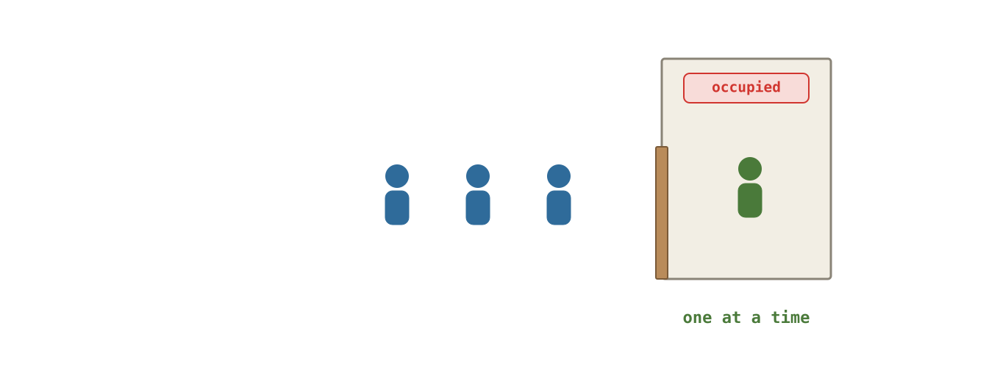</p> --- ### **mutual exclusion** only **one** person inside at a time <div class="multicolumn" style="display: grid; grid-template-columns: 40% 60%; gap: 20px; align-items: center;"> <div> </div> <div> - break it → (literally) **messy** situation! </div> </div> --- ### **progress** restroom is **empty**... but nobody goes in <p>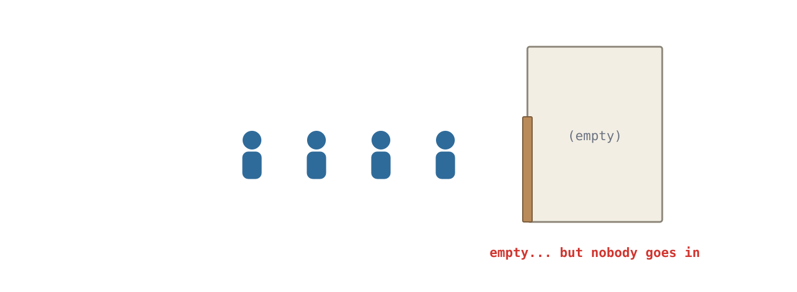</p> --- ### **progress** restroom is **empty**... but nobody goes in <div class="multicolumn" style="display: grid; grid-template-columns: 40% 60%; gap: 20px; align-items: center;"> <div> </div> <div> - everyone waits for a long time... - someone finally knocks - **nobody** was inside! </div> </div> --- ### **bounded waiting** someone **always** cuts in line ahead of you <p>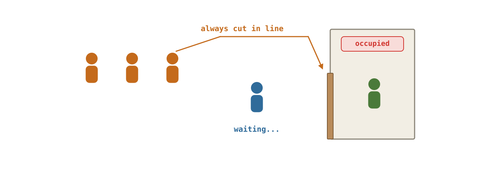</p> --- ### **bounded waiting** someone **always** cuts in line ahead of you <div class="multicolumn" style="display: grid; grid-template-columns: 40% 60%; gap: 20px; align-items: center;"> <div> </div> <div> - progress? **yes** → always in use - but **you** wait **forever** - no bound on your wait → **unfair**! </div> </div> --- ## implementing critical sections --- ### implementing critical sections - series of attempts of **increasing** complexity --- ### implementing critical sections - series of attempts of **increasing** complexity - we won't actually **use** these! --- ### implementing critical sections - series of attempts of **increasing** complexity - we won't actually **use** these! - goal → **practice** thinking about interleavings --- ### implementing critical sections - series of attempts of **increasing** complexity - we won't actually **use** these! - goal → **practice** thinking about interleavings <br> <br> our brains are **not** wired for arbitrary interleavings! --- ### first naive attempt use flag → <scb>CS_occupied</scb> --- ### first naive attempt ```C // CS_occupied initialized to false while (1) { normal_processing(); while (CS_occupied) ; CS_occupied = true; critical_section_code(); CS_occupied = false; } ``` --- ### first naive attempt ```C [3|6|4,5,7] // CS_occupied initialized to false while (1) { normal_processing(); while (CS_occupied) ; CS_occupied = true; critical_section_code(); CS_occupied = false; } ` --- ### first naive attempt ```C // CS_occupied initialized to false while (1) { normal_processing(); while (CS_occupied) ; CS_occupied = true; critical_section_code(); CS_occupied = false; } ``` --- ### first naive attempt ||| | --- | --- | | <scb>normal_processing()</scb>, <br><scb>critical_section_code()</scb> | **proxy** for real code (loop or not) | --- ### first naive attempt ||| | --- | --- | | <scb>normal_processing()</scb>, <br><scb>critical_section_code()</scb> | **proxy** for real code (loop or not) | | <scb>while</scb>, <scb>= true</scb>, <scb>= false</scb> | **implementation** of mutual exclusion (really in <scb>acquire()</scb> / <scb>release()</scb>) | || --- ### **spinning** - <scb>while (CS_occupied) ;</scb> → **spin** (polling) --- ### **spinning** - <scb>while (CS_occupied) ;</scb> → **spin** (polling) - real systems do this → **spinlocks** --- ### **spinning** - <scb>while (CS_occupied) ;</scb> → **spin** (polling) - real systems do this → **spinlocks** - better solutions **block** → later --- but...what's the **catch**? --- ### **spinning** | **cons** - burns **CPU** while waiting --- ### **spinning** | **cons** - burns **CPU** while waiting - holder **preempted**? - waiter spins its **whole** timeslice --- you try! does it provide **mutual exclusion**? **progress**? **bounded waiting**? --- ### first naive attempt | **one interleaving** 1. both threads at <scb>while</scb> → <scb>CS_occupied = false</scb> <p>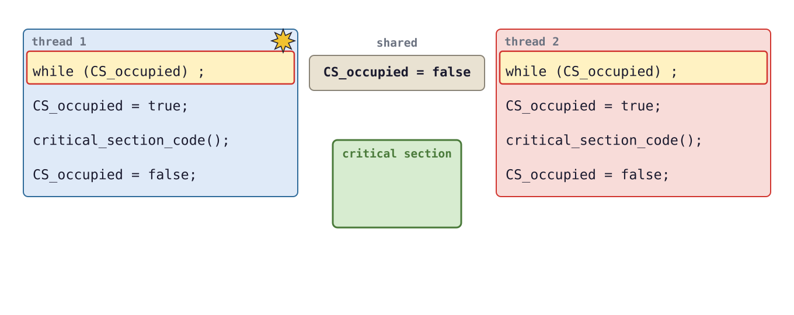</p> --- ### first naive attempt | **one interleaving** 2. <scb>T1</scb> sees <scb>false</scb>... **preempted** before setting it <p>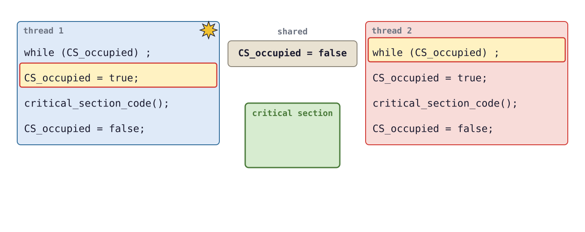</p> --- ### first naive attempt | **one interleaving** 3. <scb>T2</scb> **also** sees <scb>false</scb> <p>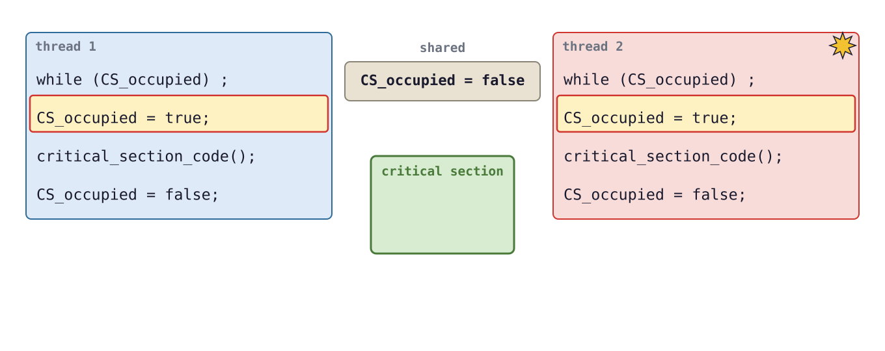</p> --- ### first naive attempt | **one interleaving** 4. <scb>T2</scb> sets <scb>true</scb> → enters CS <p>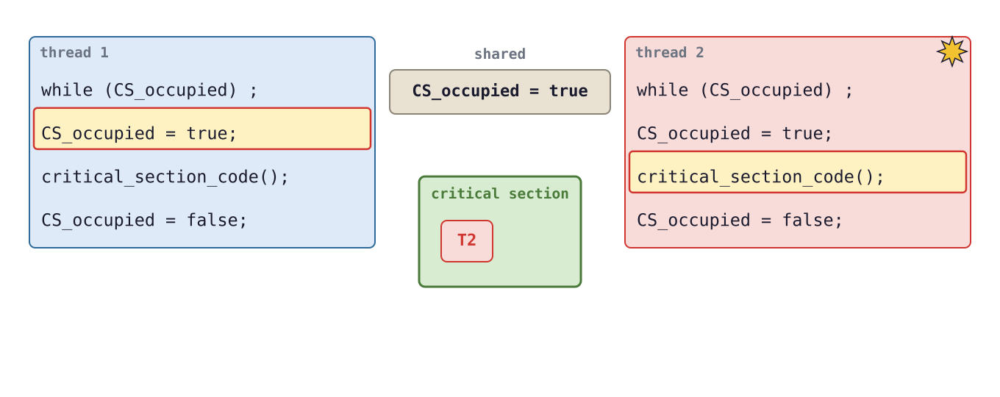</p> --- ### first naive attempt | **one interleaving** 5. <scb>T1</scb> resumes, sets <scb>true</scb> 6. <scb>T1</scb> **also** enters! (<scb>T1</scb>, <scb>T2</scb> → **both** <scb>running</scb> in CS) <p>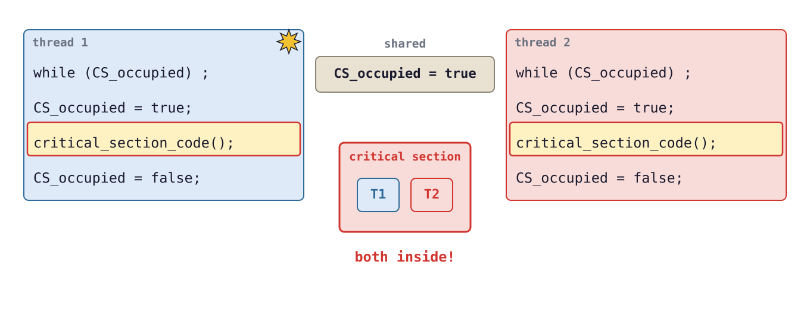</p> --- ### first naive attempt | **verdict** - mutual exclusion → **no**! --- ### first naive attempt | **verdict** - mutual exclusion → **no**! - **check** and **set** → <scb>2</scb> separate steps --- ### first naive attempt | **verdict** - mutual exclusion → **no**! - **check** and **set** → <scb>2</scb> separate steps - ...a race condition in our race-condition fix! --- ## attempt 2 | **alternation** --- ### attempt 2 | **alternation** - <scb>2</scb> threads --- ### attempt 2 | **alternation** - <scb>2</scb> threads - thread id <scb>me</scb> → **current** thread --- ### attempt 2 | **alternation** - <scb>2</scb> threads - thread id <scb>me</scb> → **current** thread - <scb>you</scb> → **other** thread --- ### attempt 2 | **alternation** - <scb>2</scb> threads - thread id <scb>me</scb> → **current** thread - <scb>you</scb> → **other** thread - <scb>turn</scb> initialized to <scb>me</scb> --- ### attempt 2 | **alternation** ```C // turn initialized to me while (1) { normal_processing(); while (turn != me) ; critical_section_code(); turn = you; } ``` --- ### attempt 2 | **alternation** ```C [4|5|6] // turn initialized to me while (1) { normal_processing(); while (turn != me) ; critical_section_code(); turn = you; } `` --- ### attempt 2 | **alternation** ```C // turn initialized to me while (1) { normal_processing(); while (turn != me) ; critical_section_code(); turn = you; } ``` --- does it meet our criteria? 1. mutual exclusion? 2. progress? 3. bounded waiting? --- consider one possible interleaving... --- ### attempt 2 | **one interleaving** 1. <scb>turn = T1</scb> → <scb>T1</scb> may enter <p>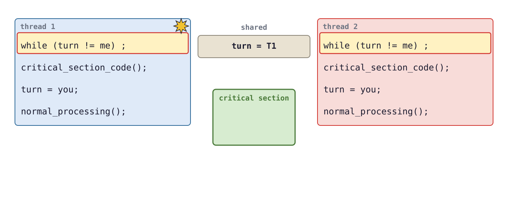</p> --- ### attempt 2 | **one interleaving** 2. <scb>T1</scb> in CS <br> <p>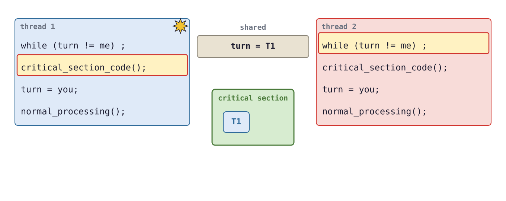</p> --- ### attempt 2 | **one interleaving** 3. <scb>T1</scb> hands over turn... then **long** <scb>normal_processing()</scb> <p>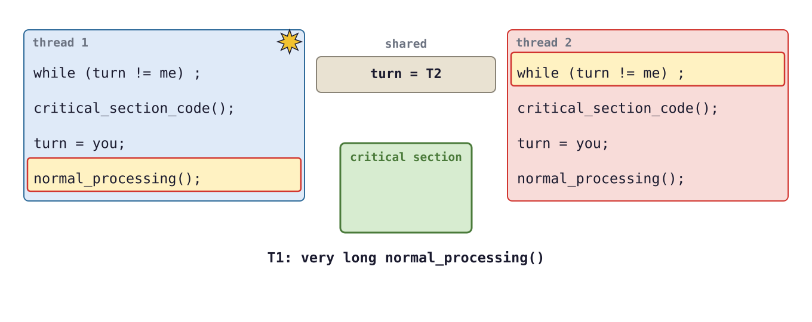</p> --- ### attempt 2 | **one interleaving** 4. <scb>T2</scb> enters, hands turn back to <scb>T1</scb> <p>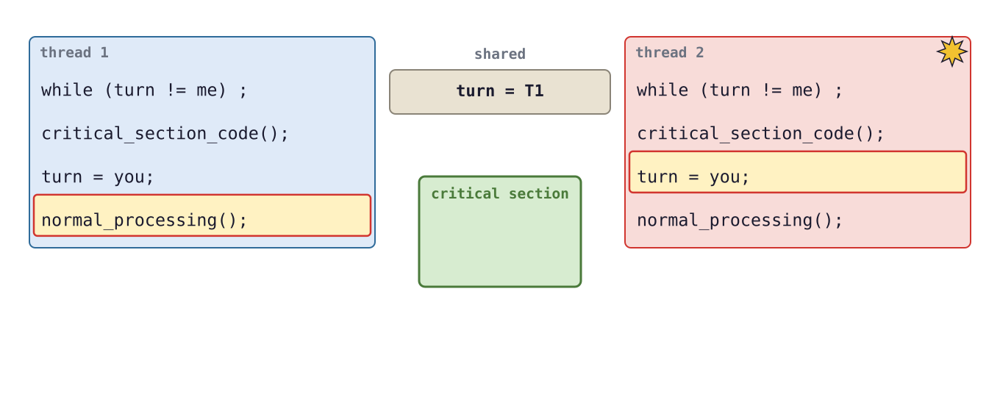</p> --- ### attempt 2 | **one interleaving** 5. <scb>T2</scb> wants in again... CS **empty** → but **stuck**! (<scb>T2</scb>: **spinning** in <scb>while (turn != me)</scb>) <p>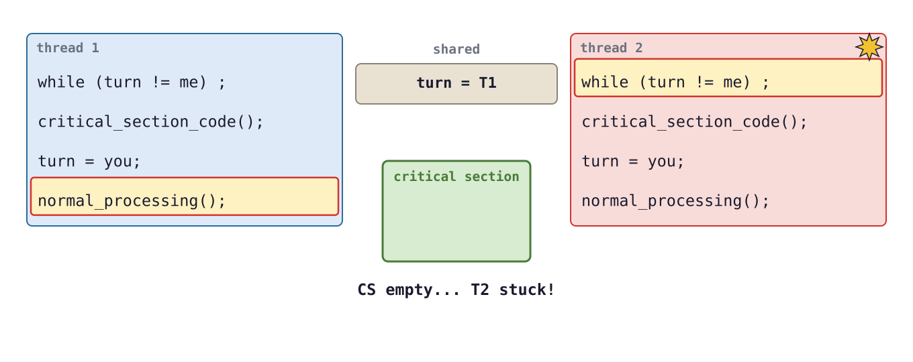</p> --- ### attempt 2 | **verdict** ||| | --- | --- | | mutual exclusion | **yes** | --- ### attempt 2 | **verdict** ||| | --- | --- | | mutual exclusion | **yes** | | progress | **no**! must strictly **alternate** | --- ### attempt 2 | **verdict** ||| | --- | --- | | mutual exclusion | **yes** | | progress | **no**! must strictly **alternate** | | bounded waiting | **yes** | || --- can you **combine** both? --- can you **combine** both? get **all** <scb>3</scb> properties (assuming <scb>2</scb> threads)! --- ## [**Peterson's** algorithm](https://en.wikipedia.org/wiki/Peterson%27s_algorithm) [1981] --- ### [**Peterson's** algorithm](https://en.wikipedia.org/wiki/Peterson%27s_algorithm) [1981] ```C // is a thread trying to enter a CS? bool flag[2] = {false, false}; int turn = me; // either me or you while (1) { normal_processing(); flag[me] = true; turn = you; while (flag[you] == true && turn == you) ; critical_section(); flag[me] = false; } ``` --- ### Peterson's algorithm ```C [2|3|7|8|9|11] // is a thread trying to enter a CS? bool flag[2] = {false, false}; int turn = me; // either me or you while (1) { normal_processing(); flag[me] = true; turn = you; while (flag[you] == true && turn == you) ; critical_section(); flag[me] = false; } ``` --- ### Peterson's algorithm ```C // is a thread trying to enter a CS? bool flag[2] = {false, false}; int turn = me; // either me or you while (1) { normal_processing(); flag[me] = true; turn = you; while (flag[you] == true && turn == you) ; critical_section(); flag[me] = false; } ``` --- ### Peterson's algorithm | **intuition** | step | intuition | |---|---| | <scb>flag[me] = true</scb> | "I **want** in" | --- ### Peterson's algorithm | **intuition** | step | intuition | |---|---| | <scb>flag[me] = true</scb> | "I **want** in" | | <scb>turn = you</scb> | "but **you** go first" (be polite!) | --- ### Peterson's algorithm | **intuition** | step | intuition | |---|---| | <scb>flag[me] = true</scb> | "I **want** in" | | <scb>turn = you</scb> | "but **you** go first" (be polite!) | | wait **only** while | **other** thread wants in **and** it's their turn | --- ### Peterson's algorithm | **intuition** | step | intuition | |---|---| | <scb>flag[me] = true</scb> | "I **want** in" | | <scb>turn = you</scb> | "but **you** go first" (be polite!) | | wait **only** while | "**other** thread wants in" **and** "it's their turn" | | <scb>flag[me] = false</scb> | "I'm done with the CS" | || --- ### Peterson's algorithm | **red and blue** <scb>2</scb> threads → <scb>red = 0</scb>, <scb>blue = 1</scb> <p>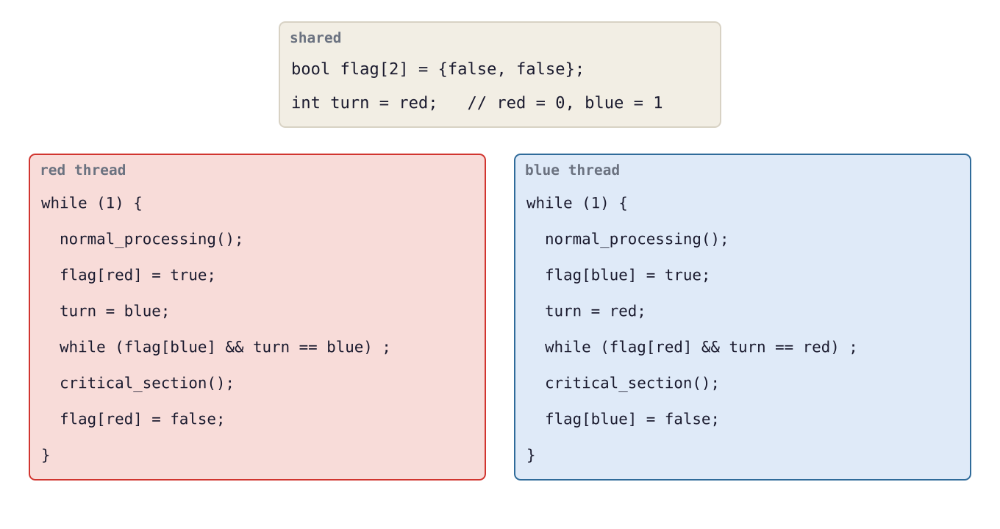</p> --- ### Peterson's algorithm | **red and blue** **both** set their flag and **both** set <scb>turn</scb>...who wins? --- **both** set their flag and **both** set <scb>turn</scb>...who wins? ## the one that wrote <scb>turn</scb> **first**! - **last** write to <scb>turn</scb> waits --- ### Peterson's algorithm | **verdict** ||| | --- | --- | | mutual exclusion | **yes** | --- ### Peterson's algorithm | **verdict** ||| | --- | --- | | mutual exclusion | **yes** | | progress | **yes** | --- ### Peterson's algorithm | **verdict** ||| | --- | --- | | mutual exclusion | **yes** | | progress | **yes** | | bounded waiting | **yes** <br> at most **one** turn | || --- ### Peterson's algorithm | **on real hardware** does it work on a modern multicore CPUs? --- ### Peterson's algorithm | **on real hardware** does it work on a modern multicore CPUs? <br> <br> <center><div class="center" data-id="box" style="height: 75px; width: 500px; background: orange;"> <b>not as written!</b> </div></center> --- ### Peterson's algorithm | **on real hardware** does it work on a modern multicore CPUs? - CPUs and compilers **reorder** loads and stores --- ### Peterson's algorithm | **on real hardware** does it work on a modern multicore CPUs? - CPUs and compilers **reorder** loads and stores - needs **memory fences** - [→ **next topic**: atomic instructions] --- see [Peterson's algorithm](https://en.wikipedia.org/wiki/Peterson%27s_algorithm) on memory ordering --- ## more than two threads | **bakery algorithm** --- ### bakery algorithm - [**Lamport's**](https://en.wikipedia.org/wiki/Lamport%27s_bakery_algorithm) bakery algorithm <br> (or the **DMV** algorithm!) --- ### bakery algorithm - [**Lamport's**](https://en.wikipedia.org/wiki/Lamport%27s_bakery_algorithm) bakery algorithm <br> (or the **DMV** algorithm!) - get a **ticket** --- ### bakery algorithm - [**Lamport's**](https://en.wikipedia.org/wiki/Lamport%27s_bakery_algorithm) bakery algorithm <br> (or the **DMV** algorithm!) - get a **ticket** - lowest ticket → served **next**! --- ### bakery algorithm <scb>4</scb> threads, <scb>3</scb> in line <p>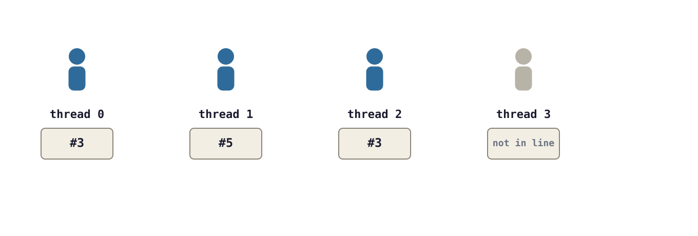</p> --- but <scb>2</scb> customers can get the **same** number... --- ### bakery algorithm | **ties** - use thread **ID** to break ties --- ### bakery algorithm | **ties** - use thread **ID** to break ties - <scb>T1</scb> before <scb>T2</scb> → <scb>1 < 2</scb> --- ### bakery algorithm | **ties** - use thread **ID** to break ties - <scb>T1</scb> before <scb>T2</scb> → <scb>1 < 2</scb> - threads must be **numbered** --- ### bakery algorithm | **ties** <scb>(3, 0) < (3, 2)</scb> → <scb>T0</scb> goes first <p>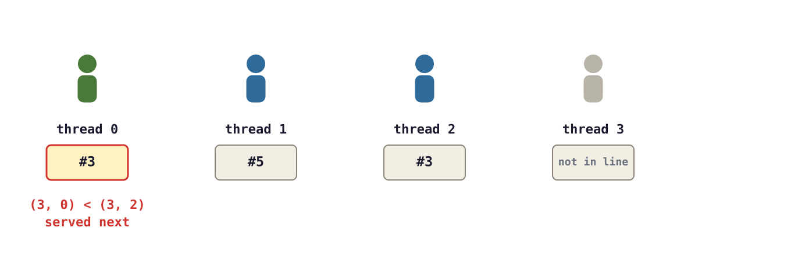</p> --- ### bakery algorithm | **shared data** --- ### bakery algorithm | **shared data** for <scb>n</scb> threads ||| | --- | --- | | <scb>boolean choosing[n] <br> = {false, ...};</scb> | is thread **choosing** a ticket? | --- ### bakery algorithm | **shared data** for <scb>n</scb> threads ||| | --- | --- | | <scb>boolean choosing[n] <br> = {false, ...};</scb> | is thread **choosing** a ticket? | | <scb>int number[n] = {0, ...};</scb> | each thread's **ticket** <br> [<scb>0</scb> → not in line] | --- ### bakery algorithm | **shared data** for <scb>n</scb> threads ||| | --- | --- | | <scb>boolean choosing[n] <br> = {false, ...};</scb> | is thread **choosing** a ticket? | | <scb>int number[n] = {0, ...};</scb> | each thread's **ticket** <br> [<scb>0</scb> → not in line] | | <scb>int me = pthread_self();</scb> | my thread **ID** | || --- ### bakery algorithm | **notation** ||| | --- | --- | | <scb>(a,b) < (c,d)</scb> | <scb>(a < c) || ((a == c) && (b < d))</scb> | --- ### bakery algorithm | **notation** ||| | --- | --- | | <scb>(a,b) < (c,d)</scb> | <scb>(a < c) || ((a == c) && (b < d))</scb> | | <scb>max(a0, ..., an-1)</scb> | largest value in <scb>{a0, ..., an-1}</scb> | || --- ### bakery algorithm ```C while (1) { choosing[me] = true; number[me] = max(number[0], ..., number[n-1]) + 1; choosing[me] = false; for (them = 0 ; them < n ; them++) { while (choosing[them]) ; while ((number[them] != 0) && (number[them], them) < (number[me], me)) ; } critical_section(); number[me] = 0; additional_processing(); } ``` Note: `choosing[me] = true` marks that this thread is in the middle of choosing its ticket. Without this flag, another thread could read `number[me]` before it has been fully assigned and make an incorrect priority comparison. The thread clears the flag after publishing its ticket; other threads wait for that before comparing tickets. --- ### bakery algorithm ```C [2|3|4|5|6|7|8|11] while (1) { choosing[me] = true; number[me] = max(number[0], ..., number[n-1]) + 1; choosing[me] = false; for (them = 0 ; them < n ; them++) { while (choosing[them]) ; while ((number[them] != 0) && (number[them], them) < (number[me], me)) ; } critical_section(); number[me] = 0; additional_processing(); } ``` --- ### bakery algorithm ```C while (1) { choosing[me] = true; number[me] = max(number[0], ..., number[n-1]) + 1; choosing[me] = false; for (them = 0 ; them < n ; them++) { while (choosing[them]) ; while ((number[them] != 0) && (number[them], them) < (number[me], me)) ; } critical_section(); number[me] = 0; additional_processing(); } ``` --- ### bakery algorithm | **step by step** --- ### bakery algorithm | **step by step** | condition | action | |---|---| | **choosing** ticket? | higher than anyone else | --- ### bakery algorithm | **step by step** | condition | action | |---|---| | **choosing** ticket? | higher than anyone else | | **in line** with a **lower** number? | wait for **every other** thread | --- ### bakery algorithm | **step by step** | condition | action | |---|---| | **choosing** ticket? | higher than anyone else | | **in line** with a **lower** number? | wait for **every other** thread | | **same** number, **lower** id? | **wait** for them | --- ### bakery algorithm | **step by step** | condition | action | |---|---| | **choosing** ticket? | higher than anyone else | | **in line** with a **lower** number? | wait for **every other** thread | | **same** number, **lower** id? | **wait** for them | | **release** CS | give up ticket <br> [<scb>number[me] = 0</scb>]| || --- ### critical section attempts | **comparison** --- ### critical section attempts | **comparison** | attempt | mutual excl. | progress | bounded wait| |---|---|---|---| | naive flag | **<span style="background-color: darkred; color: white;"> no </span>** | yes | **<span style="background-color: darkred; color: white;"> no </span>** | | alternation | yes | **<span style="background-color: darkred; color: white;"> no </span>** | yes | | Peterson's <br> [<scb>2</scb> threads] | yes | yes | yes | | bakery <br> [<scb>n</scb> threads] | yes | yes | yes | || --- ### critical section attempts | **comparison** | attempt | mutual excl. | progress | bounded wait| |---|---|---|---| | naive flag | **<span style="background-color: darkred; color: white;"> no </span>** | yes | **<span style="background-color: darkred; color: white;"> no </span>** | | alternation | yes | **<span style="background-color: darkred; color: white;"> no </span>** | yes | | Peterson's <br> [<scb>2</scb> threads] | yes | yes | yes | | bakery <br> [<scb>n</scb> threads] | yes | yes | yes | || [all → **spin**, and assume loads/stores are **not** reordered] --- ## synchronization | **summary** --- ### synchronization | **summary** ||| | --- | --- | | **kernel** | concurrent <br> due to **interrupts** | --- ### synchronization | **summary** ||| | --- | --- | | **kernel** | concurrent <br> due to **interrupts** | | **processes** | concurrent <br> due to **threads** | --- ### synchronization | **summary** ||| | --- | --- | | **kernel** | concurrent <br> due to **interrupts** | | **processes** | concurrent <br> due to **threads** | | we need | **synchronize** between flows of execution | --- ### synchronization | **summary** ||| | --- | --- | | **kernel** | concurrent <br> due to **interrupts** | | **processes** | concurrent <br> due to **threads** | | we need | **synchronize** between flows of execution | | **critical sections** | main technique <br> **uncontended** access to data structure | || --- multithreading → worth all this pain? --- multithreading → worth all this pain? ## mostly for **performance**! --- **next topic** → atomic instructions (how <scb>acquire()</scb> really works)